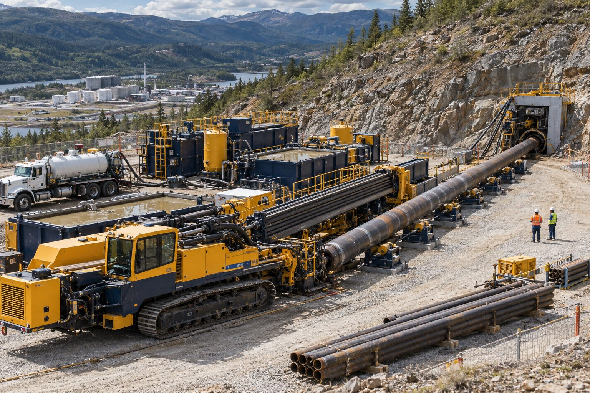

Projeye özel planlama
Yöntem ve ekipman sahanın koşullarına göre seçilir.
Hizmetlerimiz · 11

Özel Geçiş Projeleri
Standart uygulamalardan farklı saha kısıtları ve zorlu zemin koşulları için projeye özel yöntem ve ekipman planlaması.
Her geçiş standart değildir: dar şehir içi alanlar, kayalık zeminler, uzun mesafeler, büyük çaplar veya birden fazla hattın aynı güzergâhta geçmesi özel çözüm ister. Bu projelerde yöntem, ekipman ve takım dizilimi sıfırdan planlanır.
Yiba, 2000'den bu yana edindiği tecrübeyle özel geçiş projelerinde keşiften teslimata tek ekip olarak çalışır; gerektiğinde farklı kazısız yöntemleri aynı projede birleştirir.
Neden Yiba?
Yöntem ve ekipman sahanın koşullarına göre seçilir.
Zemin ve çapa uygun uç, rayba ve çekme planı.
Gerektiğinde HDD, boru sürme ve delgi birlikte.
Keşiften teslimata aynı ekip, net sorumluluk.
Sık sorulan sorular
Kaya ve karışık zeminlerde uygun uç ve rayba seçimiyle uygulama yapılabilir; uygunluk keşifte belirlenir.
Makine kapasitesi, sondaj sıvısı yönetimi ve ara çıkış noktalarıyla uzun mesafeler kademeli planlanır.
Proje verileri ve saha keşfi sonrasında yöntem belirlenir ve projeye özel teklif hazırlanır.